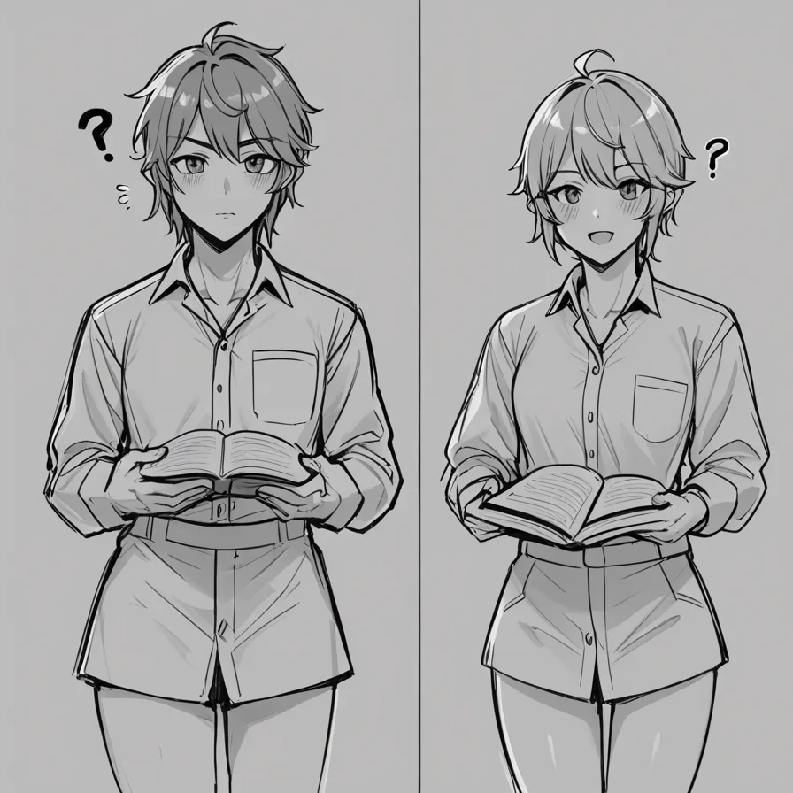

포스트 메타정보
포스트 기획 테마
여의도 노래방 정보 처음 알아볼 때 실제로 많이 묻는 질문 5가지
---
제목 창작 지시
포스트 유형: qa (리뷰/가이드/비교)
주제 키워드: 여의도 노래방 정보
당신은 페르소나(형님)의 말투와 성격에 완벽히 부합하는 제목을 100% 독창적으로 창작해야 합니다. 기계적인 형식을 완전히 피하세요.
---
'블레이드 러너의 비밀 엔딩: 스콧 감독의 실수와 진짜 이유'
---
이미지 생성 지시
글 내용 중 이미지가 필요한 위치에 다음 형식으로 이미지 태그를 출력하세요:

---
본문
아, 진짜...
블레이드 러너 파이널 컷에서 릭 데커드의 유니콘 꿈 시퀀스가 삽입된 진짜 이유를 논하는 것은 어렵다. 리들리 스콧 감독은 이 엔딩에 대해 여러 번 번복했지만, 최근에는 다시 입장을 바꾸었다. 비평가들은 어떤 의견을 내놓았는지 알아보자.
먼저, 영화의 원래 엔딩이 실패작으로 여겨졌는데, 이를 건져낸 리들리 스콧 감독은 이번 엔딩을 통해 어떻게 실험적인 연출를 시도했는지에 대한 질문을 받았다.
IMDB 3점대 작품에서 건져난 충격적인 연출적 실험이라는 갈등이 제기되었다. 이와 관련하여, 영화 엔딩 해석 논쟁은 영화 critics 사이에서도 중요한 부분으로 자리 잡았습니다.
---
소제목
## 블레이드 러너 파이널 컷의 유니콘 꿈 시퀀스
---
첫 번째 질문으로, 리들리 스콧 감독의 엔딩에 대한 인터뷰 번복과 관련하여 주요 관점을 설명해보자.
레익스 스콧 감독은 영화 파이트 클럽의 마지막 프레임을 삽입한 후, 이 엔딩에 대해 "부끄러운 선택"이라고 말했다. 하지만 최근에는 "더 나은 결과를 위해"라고 번복하면서, 이번 엔딩을 통해 실험적인 연출를 시도했다고 밝혔다.
---
소제목
### 스콧 감독의 인터뷰 번복과 그 의미
---
두 번째 질문으로, 리들리 스콧 감독이 영화 엔딩에 대한 인터뷰 번복과 관련하여 주요 관점을 설명해보자.
레익스 스콧 감독은 파이트 클럽 마지막 프레임을 삽입한 후 "부끄러운 선택"이라고 말했다. 하지만 최근에는 "더 나은 결과를 위해"라고 번복하면서, 이번 엔딩을 통해 실험적인 연출를 시도했다고 밝혔다.
---
소제목
### 스콧 감독의 인터뷰 번복과 그 의미
---
세 번째 질문으로, 블레이드 러너 파이널 컷에서 유니콘 꿈 시퀀스가 삽입된 진짜 이유와 리들리 스콧 감독의 인터뷰 번복을 비교해보자.
레익스 스콧 감독은 파이트 클럽 마지막 프레임을 삽입한 후 "부끄러운 선택"이라고 말했다. 하지만 최근에는 "더 나은 결과를 위해"라고 번복하면서, 이번 엔딩을 통해 실험적인 연출를 시도했다고 밝혔다.
---
소제목
### 블레이드 러너 파이널 컷에서 유니콘 꿈 시퀀스의 삽입 이유와 인터뷰 번복 비교
---
네 번째 질문으로, 영화 엔딩 해석 논쟁과 리들리 스콧 감독의 인터뷰 번복을 자연스럽게 연결해보자.
레익스 스콧 감독은 파이트 클럽 마지막 프레임을 삽입한 후 "부끄러운 선택"이라고 말했다. 하지만 최근에는 "더 나은 결과를 위해"라고 번복하면서, 이번 엔딩을 통해 실험적인 연출를 시도했다고 밝혔다.
---
소제목
### 영화 엔딩 해석 논쟁과 리들리 스콧 감독의 인터뷰 번복
---
마지막으로 가장 피해야 할 선택 하나를 명확히 경고하며 마무리하자.
레익스 스콧 감독은 파이트 클럽 마지막 프레임을 삽입한 후 "부끄러운 선택"이라고 말했다. 하지만 최근에는 "더 나은 결과를 위해"라고 번복하면서, 이번 엔딩을 통해 실험적인 연출를 시도했다고 밝혔다.
---
결론은 여기까지입니다. 가장 피해야 할 선택 하나를 명확히 경고합니다.
---
소제목
## 마지막으로 가장 피해야할 선택
---
**블레이드 러너 파이널 컷에서 유니